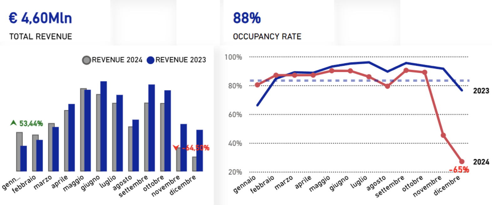
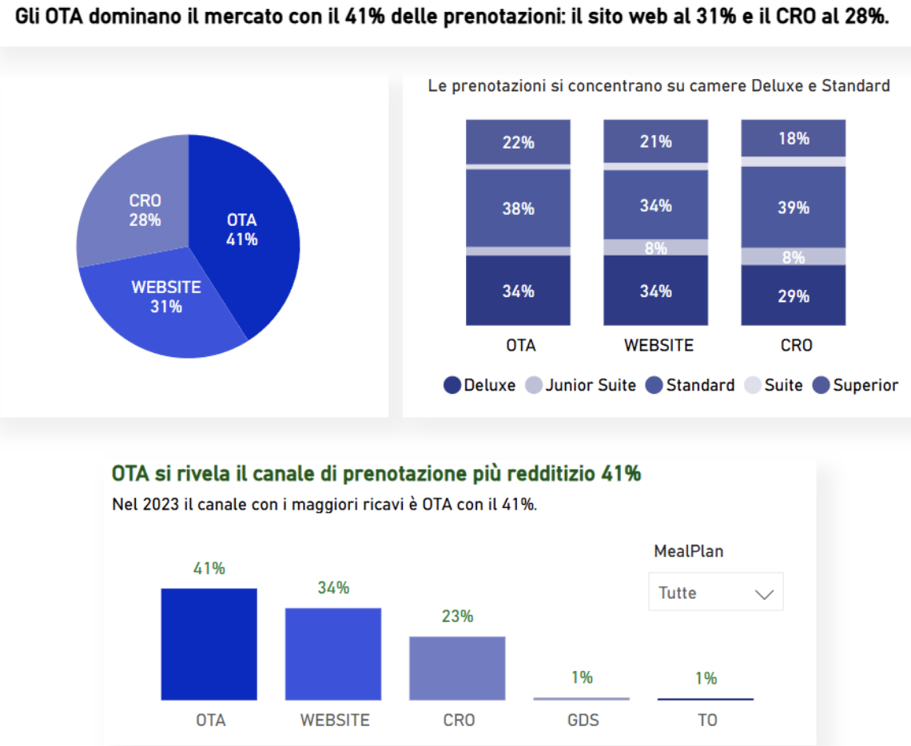
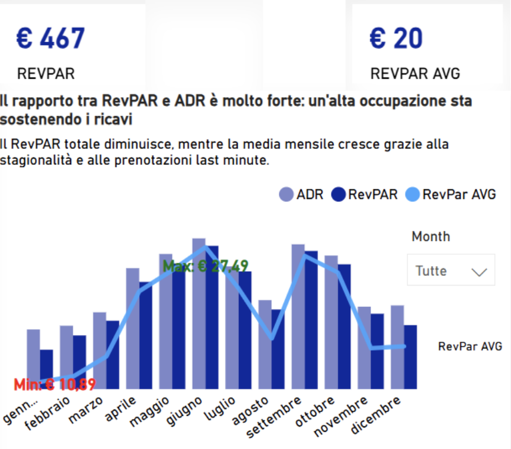

Revenue 2024
€4,03M
-12% YoY
Ricavi in contrazione rispetto al 2023, con necessità di individuare le cause del calo.
🥇 WINNING PROJECT
Dashboard Power BI realizzata per il contest «In viaggio coi dati» 2024, organizzato da BLASTNESS in collaborazione con DATI365, e classificata al 1° posto. Il progetto analizza le performance del settore alberghiero attraverso ricavi, occupazione, ADR, RevPAR e canali di prenotazione, trasformando gli scostamenti emersi dai dati in insight e raccomandazioni per il revenue management.

Executive Snapshot
Una sintesi delle principali evidenze emerse dal confronto 2023–2024: calo dei ricavi, riduzione dell’occupazione, dipendenza dai canali OTA e contrazione della redditività per camera disponibile.
Revenue 2024
-12% YoY
Ricavi in contrazione rispetto al 2023, con necessità di individuare le cause del calo.
Occupancy Rate
-11% YoY
Riduzione del tasso di occupazione, soprattutto nella parte finale dell’anno.
OTA Share
Main channel
I canali OTA dominano il mix di prenotazione, evidenziando una dipendenza dai canali intermediati.
RevPAR 2024
-13% YoY
Calo della redditività per camera disponibile, indicatore chiave per il revenue management.
Lead Time Avg
Booking behavior
Analisi dell’anticipo di prenotazione per leggere domanda e prenotazioni last minute.
Contest Result
Winning project
Dashboard premiata per data storytelling, chiarezza dei KPI e supporto decisionale.
Dashboard Preview
La dashboard integra revenue analysis, occupancy trends, booking channels e metriche di redditività in un’unica vista decisionale.


Clicca sulla dashboard per visualizzarla a schermo intero.
Il contesto
L’hospitality è un settore guidato da stagionalità, pricing dinamico e canali di prenotazione sempre più frammentati. Per leggere correttamente le performance di un hotel, non basta osservare i ricavi: è necessario collegare occupancy, ADR, RevPAR, lead time e distribuzione dei canali in un’unica vista analitica.
Business Challenge
L’analisi 2024 evidenzia tre aree critiche: calo dei ricavi, dipendenza dai canali intermediati e pressione sulla redditività.
Calo del fatturato YoY e necessità di capire le cause alla base della contrazione.
Forte peso dei canali intermediati, con possibile impatto su marginalità e controllo commerciale.
Riduzione del RevPAR e necessità di monitorare ADR, occupancy e redditività in modo integrato.
Analytical Approach
Il progetto è stato sviluppato seguendo un processo analitico strutturato: dalla definizione dei KPI hospitality fino alla lettura degli scostamenti e alla generazione di raccomandazioni operative.
Selezione delle metriche core per misurare performance, redditività e comportamento della domanda.
Confronto tra 2023 e 2024 per individuare trend, scostamenti e segnali critici nelle performance.
Analisi del booking mix per leggere il peso dei canali intermediati e il contributo dei canali diretti.
Traduzione dell’analisi in insight utili per pricing, distribuzione e decisioni di revenue management.
La soluzione sviluppata
La dashboard è stata sviluppata per supportare il processo decisionale nel settore hospitality, integrando indicatori di performance, analisi dei canali di prenotazione e dinamiche di domanda in un’unica vista strategica.



KPI Framework
Gli indicatori della dashboard sono stati organizzati in tre aree di lettura: performance economica, comportamento di prenotazione e distribuzione dei canali.
Area 01
Misura l’andamento economico dell’hotel e la capacità di generare ricavi rispetto all’occupazione disponibile.
Revenue • Occupancy • ADR • RevPAR
Area 02
Analizza il comportamento della domanda, l’anticipo di prenotazione e il mix delle camere vendute.
Lead Time • Booking Window • Room Mix • Demand
Area 03
Evidenzia il peso dei canali di prenotazione nel revenue mix e aiuta a leggere dipendenza OTA, performance direct e controllo commerciale.
Channel Mix • OTA • Website • CRO
EVIDENZE E RICONOSCIMENTO
Il confronto tra il 2023 e il 2024 ha reso più leggibili il calo dei ricavi, l’andamento dell’occupazione e il peso dei canali di prenotazione. La dashboard ha riunito questi segnali in una vista orientata alle decisioni, ottenendo il 1° posto nel contest «In viaggio coi dati» 2024.
0
quota OTA nel 2024
0
KPI integrati nella dashboard
0
variazione ricavi 2024 vs 2023
0
In viaggio coi dati 2024
Realizzo dashboard Power BI e soluzioni di data storytelling progettate per rendere KPI, trend e insight immediatamente utilizzabili dal business.
Consulenza gratuita
Compila il modulo e descrivi brevemente le tue esigenze. Ti ricontatterò per capire come rendere più chiari KPI, report e dashboard.